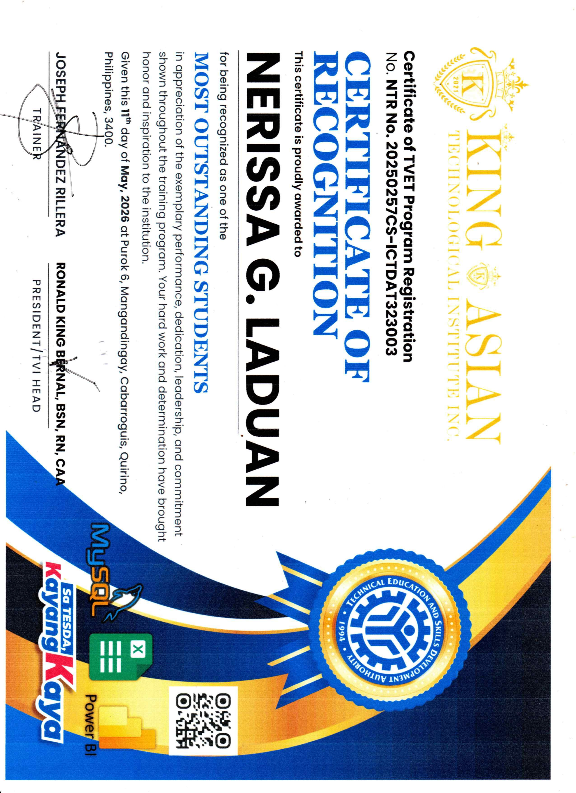
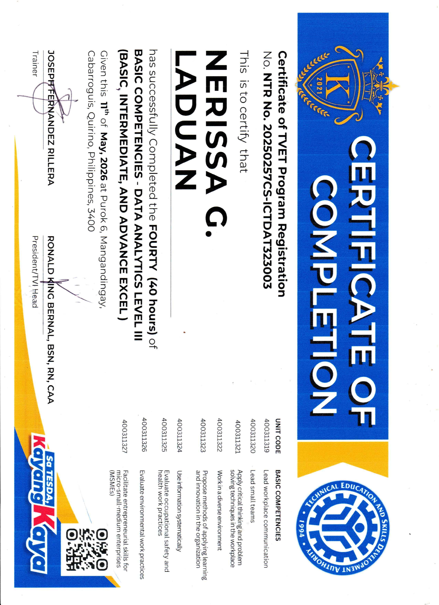
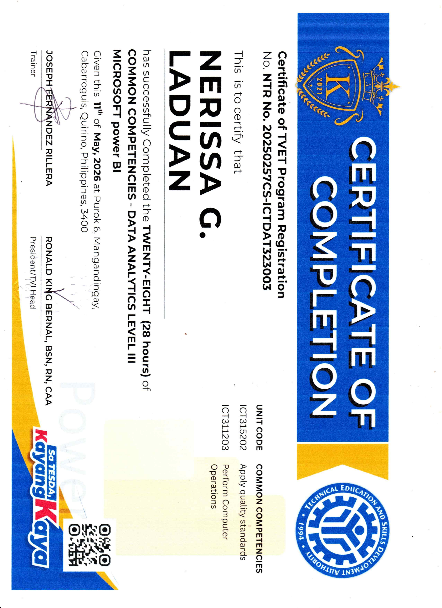
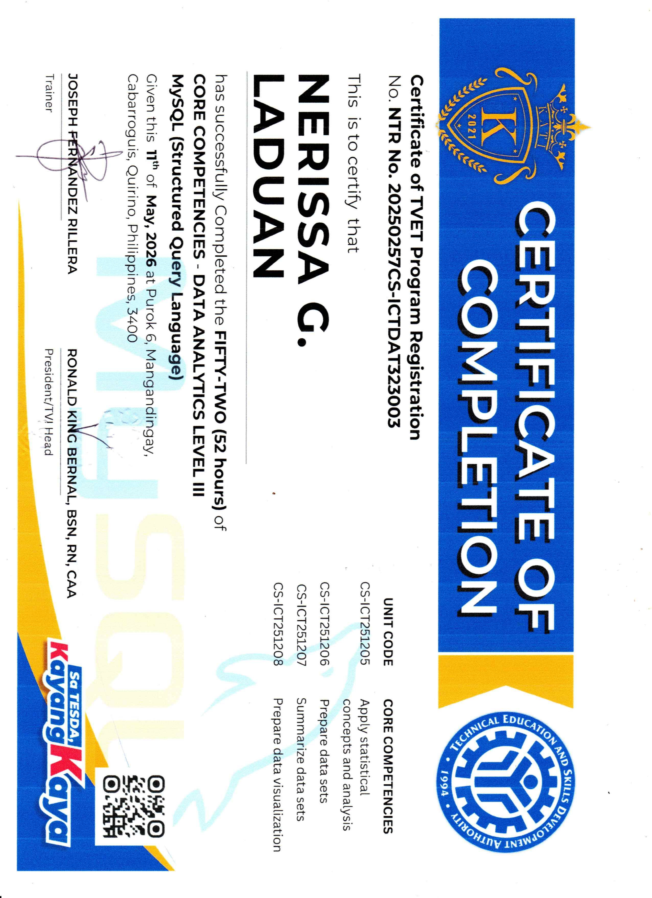

Data enthusiast passionate about transforming data into meaningful insights and simple visual stories.
"Data is the compass that guides smarter decisions."
— My guiding beliefHi! I'm Nerissa G. Laduan, I am an aspiring Data Analyst from the Philippines who is passionate about transforming raw data into clear, meaningful insights that help people and businesses make better decisions.
I have foundational skills in Excel, SQL, Power BI, and data cleaning, and I am actively building my experience through hands-on practice and personal projects. While I do not yet have formal work experience, I am highly motivated, detail-oriented, and committed to continuous learning and improvement. I enjoy working with data because it allows me to find patterns, solve problems, and create simple visual stories that are easy to understand. I am especially interested in building dashboards and reports that bring clarity to complex information.
My purpose is not only to become a professional Data Analyst, but also to use my skills to provide value, support businesses, and grow into a reliable freelancer or Virtual Assistant in the data field.
I am open to entry-level opportunities where I can learn, contribute, and develop my skills in a real-world environment.
Proof of training and skills I’ve earned through accredited programs.

This isn't just about finishing the course; it’s proof that I went above and beyond. It shows I wasn't just a face in the crowd but stood out for being a leader and a dedicated worker throughout the whole training program.

This 40-hour course was about the "soft skills" and essential tools that keep a workplace running. It proves I know how to lead a small team, solve problems on the fly, and use Excel at a high level to get things done efficiently.

Over 28 hours, I learned how to take messy information and turn it into clear, professional visual dashboards. It’s about making data easy for anyone to understand at a glance using Power BI.

This was my longest stretch—52 hours of learning the "behind-the-scenes" of data. I learned how to talk to databases using MySQL to organize, find, and summarize massive amounts of information so it’s ready to be used.
These are the qualities I bring to every project and client relationship.
I pay close attention to details to make sure my work is accurate and clean. For example, when I work on Excel or Power BI dashboards, I double-check the data to avoid mistakes like wrong totals or missing entries. I also make sure charts are clear and easy to understand so clients can quickly get the right insights without confusion
I can quickly learn new tools and processes. For instance, even if I haven’t used a specific Power BI feature or Excel formula before, I take time to explore it, watch tutorials, and apply it right away in practice. This helps me adapt fast to new tasks or client requirements without needing long training.
I am committed to finishing my tasks properly and on time. If a project requires extra effort, like cleaning messy data or fixing errors in a report, I don’t stop until it’s done right. I focus on quality work, even if it takes longer, because I believe good results matter more than rushing.
I always think about what the client really needs. For example, if a client wants a simple report, I don’t just build complex dashboards—I make sure it’s easy to read and useful for their decision-making. I also listen carefully to feedback and adjust my work based on what helps them most.
Every expert was once a beginner. Here's my path so far.
I first became interested in data analytics when I watched an Excel tutorial on YouTube. I realized how powerful data can be in solving real business problems, such as organizing information, tracking performance, and making better decisions. That moment sparked my serious interest in pursuing this field.
I graduated with a Bachelor of Technical Teacher Education (BTLED) major in ICT. During my studies, I also gained teaching experience, including helping students learn Microsoft Excel. This strengthened my ability to explain data concepts in a simple and practical way.
I completed formal training in Data Analytics under TESDA, where I gained hands-on experience in Excel, Power BI, Power Query, and basic data processing. This training helped me build practical skills in cleaning data, creating reports, and building dashboards.
Currently building my project portfolio and actively seeking entry-level and freelance data analytics roles where I can contribute and keep growing.
My next milestone — working with a real client to deliver a data project that creates genuine value for their business.